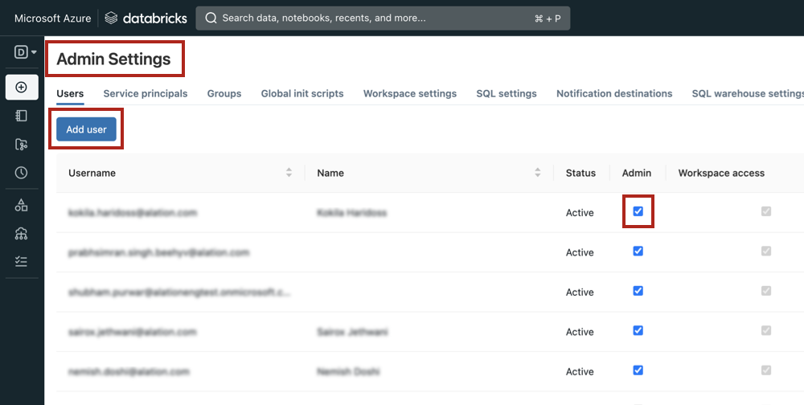

Azure Databricks: Configure SSO through OAuth for Compose¶
Applies from version 2020.4
Alation supports the OAuth 2.0 protocol for user connections from Compose and the catalog for Azure Databricks and Azure Databricks Unity Catalog data sources via Azure Active Directory (Azure AD) as the OAuth provider.
A user connection is established by an individual user who wants to access a data source from Alation, as opposed to the connection established via the service account to extract metadata, query history, or data samples.
Users may need to open an individual connection to perform these actions:
Compose
Execute queries
Execute queries on a schedule
Run query forms
Create Excel Live Reports
Catalog
Upload data into the data source
Perform dynamic sampling of a table or column
Run a query form
With OAuth enabled and configured, users connecting to Azure Databricks or Azure Databricks Unity Catalog will be redirected to the Azure AD login screen in a new browser tab. Upon authentication, the login screen will close, and Alation will establish a connection to the data source.
Note
The OAuth 2.0 protocol provides a secure authorization mechanism for applications and users to access a resource. Authorization is managed with access tokens issued by an authorization server. The token holder is allowed to access the resource until the token expires. When an access token has expired, a refresh token can be requested by the application to retrieve a new access token.
Workflow¶
To configure OAuth with Compose for your Azure Databricks or Azure Databricks Unity Catalog OCF data sources, follow this workflow:
Create Service Principal in Azure Active Directory¶
Enabling OAuth for a Databricks data source requires provisioning a service principal in Azure Active Directory. You will need to collect the following information from the service principal:
Client ID
Client secret value
Authorization endpoint
Token endpoint
We recommend creating a list with all the required information and storing it securely.
To provision a service principal in Azure Active Directory:
Sign in to Azure Portal using your Azure account.
Select Azure Active Directory.
Go to App registrations and click New registration.
In the Name field, specify a name for the application.
Under Supported account types, select Single tenant.
Under Redirect URI (optional), select Web as the app type and provide the Redirect URI in the format
https://<your_Alation_URL>/api/datasource_auth/oauth/callback. For example,https://datacatalog.alation-test.com/api/datasource_auth/oauth/callback. Make sure there is no forward slash/at the end of the URI.Click Register to complete the app registration. The Overview page is displayed.
Copy and save the Application (client) ID from the Essentials section on the Overview. You’ll need it during the configuration in Alation.
Go to the Endpoints tab. Copy the values of OAuth 2.0 authorization endpoint (v1) and OAuth 2.0 token endpoint (v1), and save them. Make sure that you copy version 1 (v1) of the authorization and the token endpoints.
From the main menu on the left, select API permissions.
Click Add a permission and select APIs my organization uses.
Search with the keyword
AzureDatabricksand click the AzureDatabricks API. Make sure there is no space in the search keyword.Select the User Impersonation permission and click Add permissions.
On the API permissions page, select Grant admin consent for <Account> and in the pop-up dialog that opens, click Yes.
In the menu on the left, select Certificates & secrets.
Click New client secret to add a new client secret. Specify a description, select an expiration period, and click Add.
Copy the client secret value and save it in a safe location. You only have one chance to copy the client secret value as it won’t be displayed again after you close this page.
{kind=link}
Create Databricks Users¶
To connect to Azure Databricks or Unity Catalog in Compose, users must exist in Azure Databricks. Perform the following steps to add the users:
In Azure Databricks, go to Admin Settings.
Click Add User to add a new user and provide the user email in the dialog box.
Select the Admin checkbox for the new user to enable the user to run queries in Compose.
Note
If the Admin permission cannot be granted, the Can Attach To permission should also allow making connections with OAuth.
{kind=link}
Configure OAuth for Compose¶
To enable OAuth in Compose for an Azure Databricks data source:
In Alation, open the Settings page of your Azure Databricks data source.
Go to the Compose tab.
Note
If it’s a Custom DB data source, go to the General Settings tab.
Under Compose Connections, modify the default connection or create a new one. To enable OAuth, add parameters
Authmech=11;Auth_flow=0.Important
The Azure Databricks OCF connector supports two JDBC URI formats with Compose OAuth—
spark://(from connector version 1.x) anddatabricks://(from connector version 2.x).The Databricks Unity Catalog OCF Connector only supports the
databricks://JDBC URI format with Compose OAuth (from connector version 2.1.x).
Example:
databricks://dbc-32am8401-ac16.cloud.databricks.com:443/default;transportMode=http;ssl=1;AuthMech=3;httpPath=/sql/1.0/warehouses/9f5d50hhsaeb0k23;UseNativeQuery=0;Authmech=11;Auth_flow=0;Under the OAuth Connection section, select the checkbox Enable OAuth 2.0 in Compose. This reveals several parameters for the OAuth setup.
Enter the values into the fields and click Save.
Field
Value
Client ID
Provide the client ID.
Client Secret
Provide the client secret value.
Request Refresh Token
Select the Request Refresh Token to enable requests for refresh tokens.
Enable PKCE
Leave as is (unselected). This setting does not apply to this data source type.
Authorization Endpoint
Provide the authorization endpoint.
Token Endpoints
Provide the token endpoint.
Default Scope
Leave this field blank.
Refresh Scope
Leave this field blank.
Username Field/Claim
Use the value
unique_name.JWT
Select this checkbox (required).
Access Token Parameter name
Use the value
Auth_AccessToken.OAuth Enablers
Provide the value
Authmech=11&Auth_flow=0. Make sure there is an ampersand symbol between the parameters.
{kind=link}
The screenshot below shows an example of a Compose tab configuration:
{kind=link}
Connect in Compose¶
After you have completed the configuration, Compose users should be able to connect to Databricks via OAuth-enabled connections and run queries.
To connect to the database in Compose:
Click Connection Settings to open the connection settings dialog.
In the Connection Settings dialog that opens, select the OAuth-enabled connection.
From the Connect as (Select User) list, select your user or click Add New (SSO login).
The Microsoft login page should open in a new tab. Authenticate with your Azure Databricks credentials.
{kind=link}
{kind=link}
{kind=link}
More information about the Connection Setting dialog can be found in Working with Data Source Connections.
Troubleshooting¶
If your OAuth configuration requires fine-tuning, you will get authorization errors in Alation. The error usually contains details about possible causes and may include troubleshooting tips.
Refer to the table below for message examples.
Error |
Description |
|---|---|
Authorization terminated unexpectedly |
This message is shown:
|
The authorization server reported a failed authorization attempt: <message> |
If authorization fails, the authorization server may respond with error details in the error message. Examples:
|
Token request failed following successful authorization |
In some cases after successful authorization, the request for tokens can fail. This message will be followed by further details. |
There was a problem extracting username information following successful authorization and token retrieval. Please check the OAuth settings for the data source |
The causes of this error may be:
|
Connection timeout |
When the cluster is not running, the connection will time out and return a connection error:
|
HTTP Response code: 400 Error Message: Authorization related error response returned, but no token expired message received |
Ensure that the signed-in user has permissions to use the compute cluster in the connection URI. |
Log Location¶
The log entries for OAuth authorization can be found in the file /opt/alation/site/logs/uwsgi.log (path inside the Alation shell).